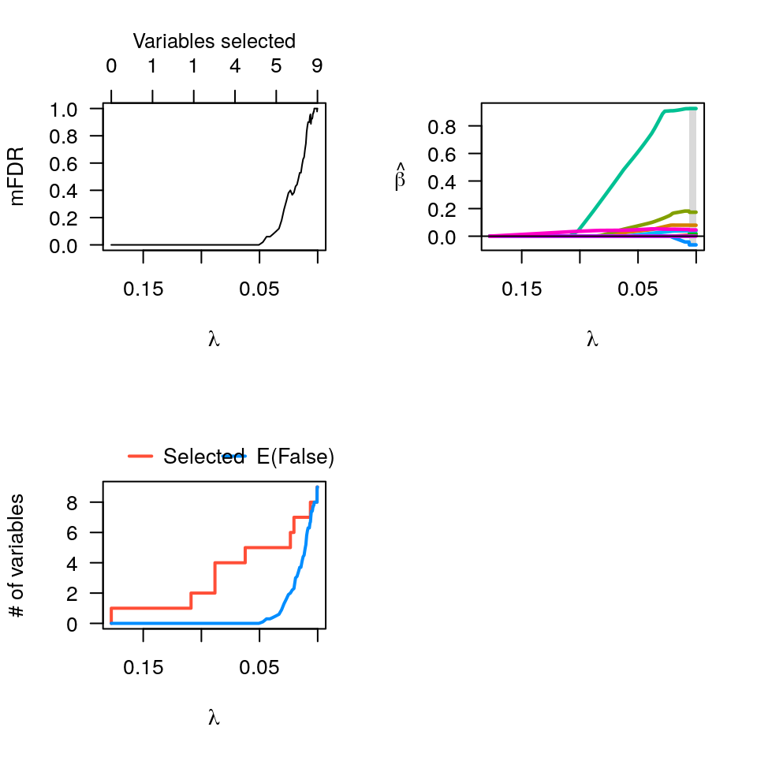

Permutation fitting for ncvreg
perm-ncvreg.RdFits multiple penalized regression models in which the outcome is randomly permuted, thereby allowing estimation of the marginal false discovery rate.
perm.ncvreg(X, y, ..., permute=c("outcome", "residuals"), N=10, seed, trace=FALSE)
Arguments
| X | The design matrix, without an intercept, as in |
|---|---|
| y | The response vector, as in |
| ... | Additional arguments to |
| permute | What to permute. If |
| N | The number of permutation replications. Default is 10. |
| seed | You may set the seed of the random number generator in order to obtain reproducible results. |
| trace | If set to TRUE, perm.ncvreg will inform the user of its progress by announcing the beginning of each permutation fit. Default is FALSE. |
Details
The function fits a penalized regression model to the actual data,
then repeats the process N times with a permuted version of the
response vector. This allows estimation of the expected number of
variables included by chance for each value of lambda. The
ratio of this expected quantity to the number of selected variables
using the actual (non-permuted) response is called the marginal false
discovery rate (mFDR).
Value
An object with S3 class "perm.ncvreg" containing:
The number of variables selected at each value of
lambda, averaged over the permutation fits.
The actual number of selected variables for the non-permuted data.
The estimated marginal false discovery rate (EF/S).
The fitted ncvreg object for the original
(non-permuted) data.
The loss/deviance for each value of lambda,
averaged over the permutation fits. This is an estimate of the
explanatory power of the model under null conditions, and can be
used to adjust the loss of the fitted model in a manner akin to
the idea of an adjusted R-squared in classical regression.
See also
Examples
# Linear regression -------------------------------------------------- data(Prostate) pmfit <- perm.ncvreg(Prostate$X, Prostate$y) op <- par(mfcol=c(2,2)) plot(pmfit) plot(pmfit, type="EF") plot(pmfit$fit) lam <- pmfit$fit$lambda pmfit.r <- perm.ncvreg(Prostate$X, Prostate$y, permute='residuals') plot(pmfit.r, col="red") # Permuting residuals ispar(op) # Logistic regression ------------------------------------------------ data(Heart) pmfit <- perm.ncvreg(Heart$X, Heart$y, family="binomial") op <- par(mfcol=c(2,2)) plot(pmfit) plot(pmfit, type="EF") plot(pmfit$fit) par(op)